Inicio / Taller
Ven sin reserva. Por orden de llegada.
Taller especializado en refrigeración y aire acondicionado automotriz en Puerto Montt. Te asesoramos, diagnosticamos y dejamos tu sistema funcionando al 100%.
- Cargas de refrigeranteCarga correcta según especificación del vehículo.
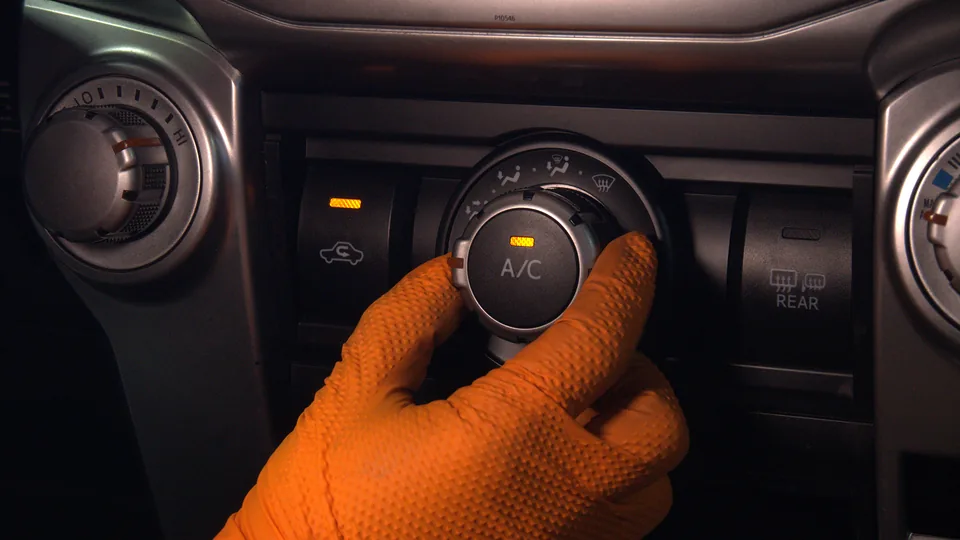
- Reparación de fugas y soldadurasDetección de fugas y soldadura de aluminio.
- Fabricación y reparación de cañerías y manguerasPrensado de mangueras y fittings.
- Diagnósticos y mantenimientosComponentes eléctricos, compresor, filtro de polen.
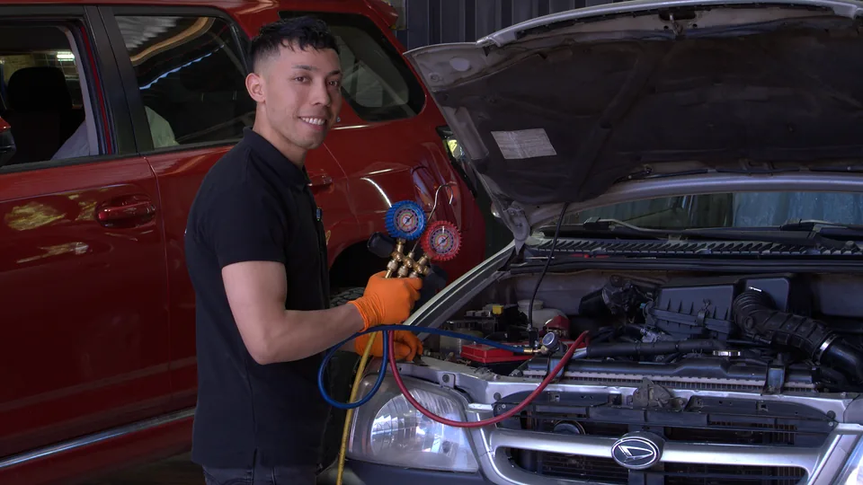
Sin hora agendadaLunes a viernes, 9:00 a 18:00
Lun a Vie · 9:00 - 18:00
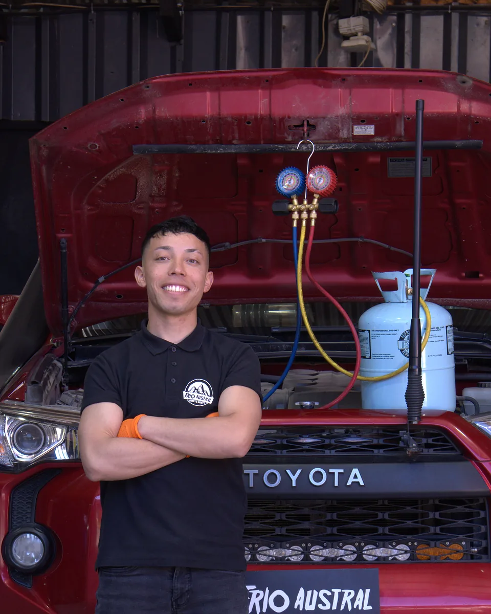
El taller
Un taller real, con oficio.
Refrigeración y aire acondicionado automotriz en Augusto Goecke 296, Puerto Montt. Lo que enseñamos en los cursos sale de este taller.
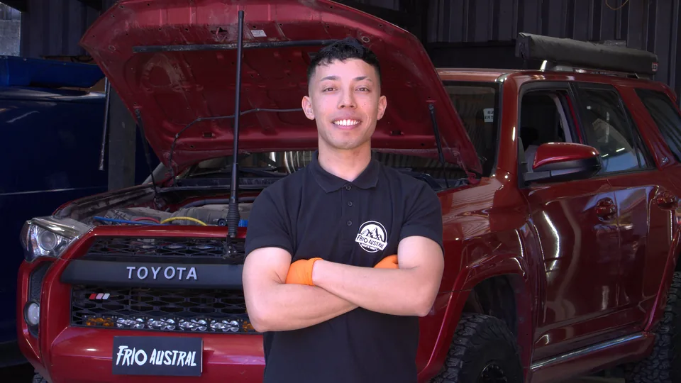
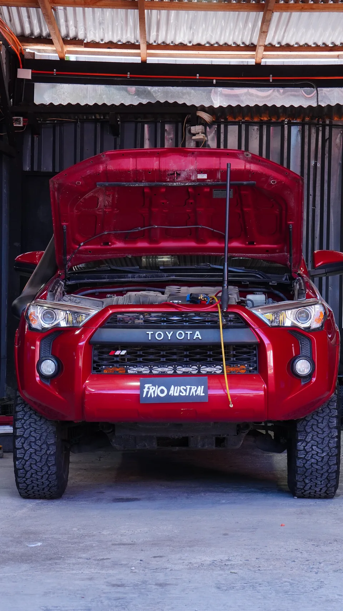
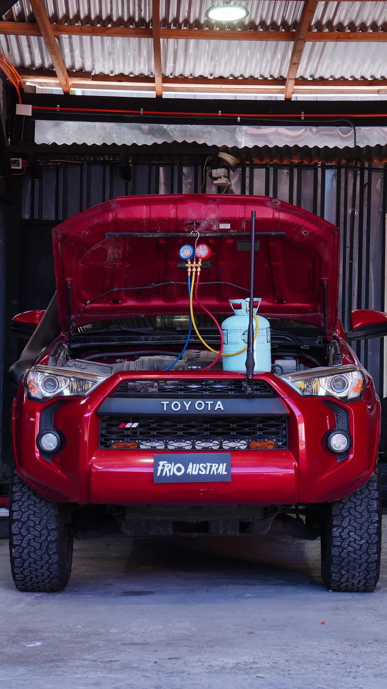
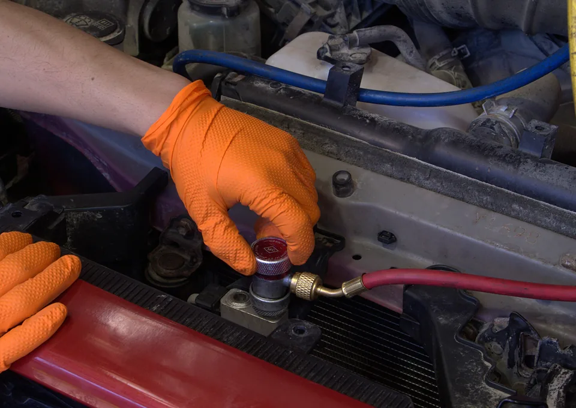
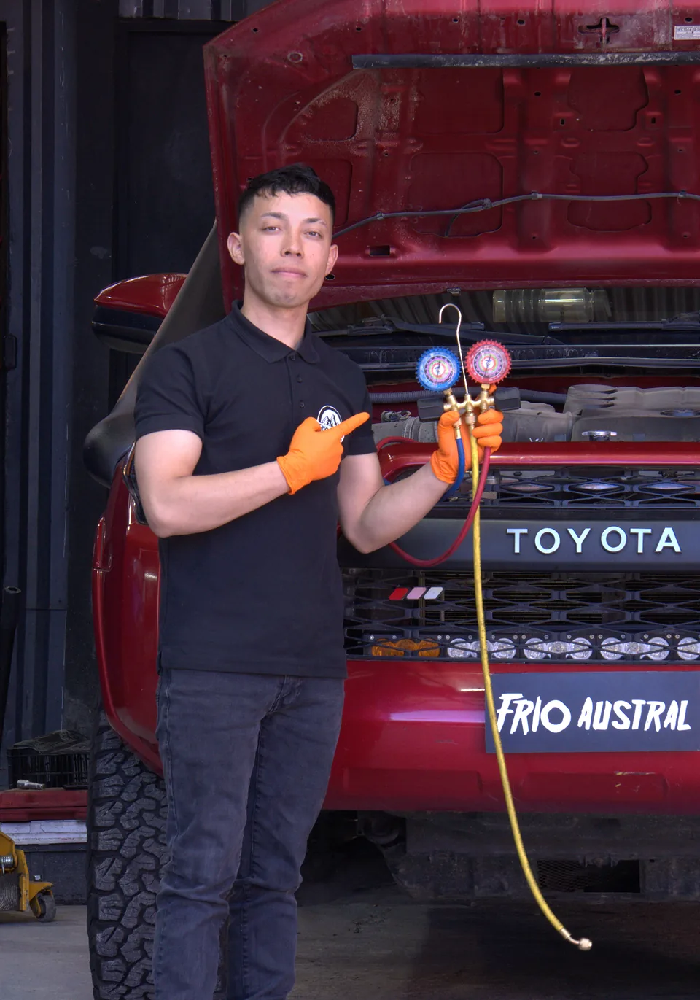
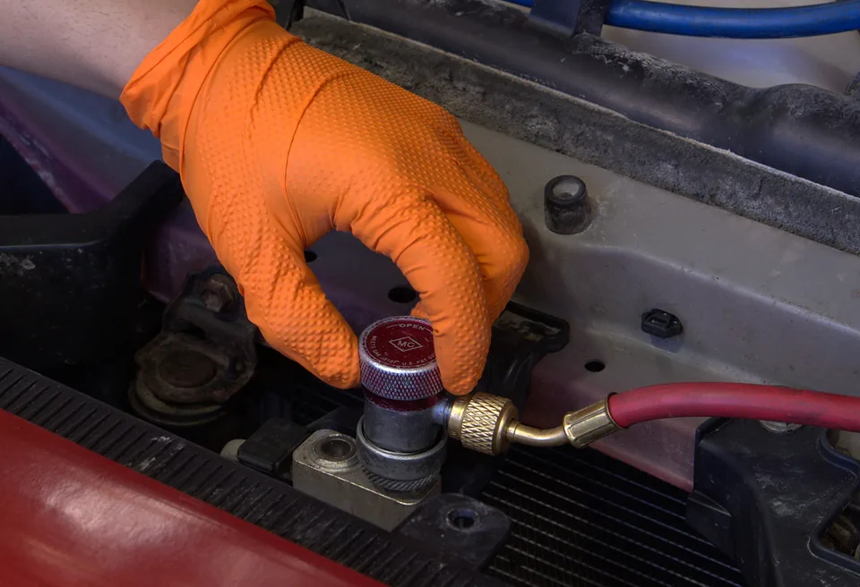
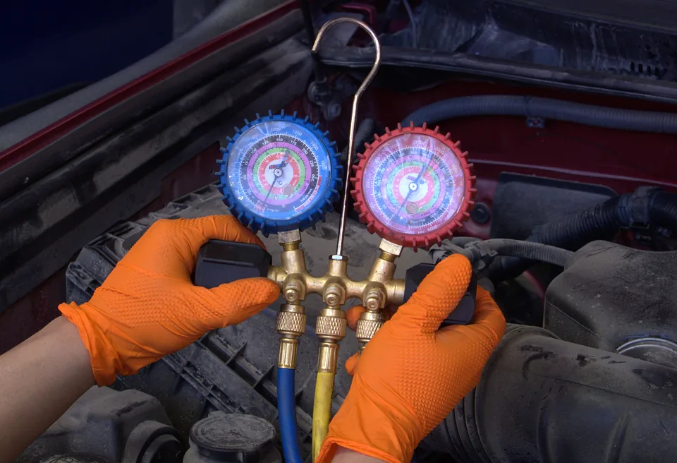
Nuestro equipo
Las personas detrás de cada trabajo.
Un equipo que atiende, diagnostica y repara en el mismo taller. Cuando traes tu vehículo, te recibe la misma gente que lo trabaja.
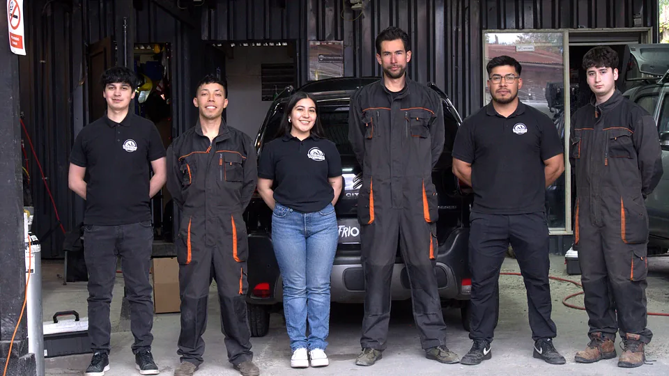
Ubicación
Augusto Goecke 296
Puerto Montt, Chile
- Horario
- Lunes a Viernes · 9:00 – 18:00
- Atención
- Por orden de llegada, sin hora previa
- Taller
- +56 9 8778 5601
- Cursos y suministros
- +56 9 6102 9188